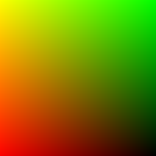
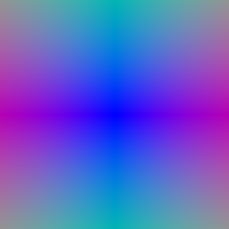
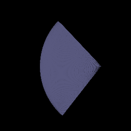
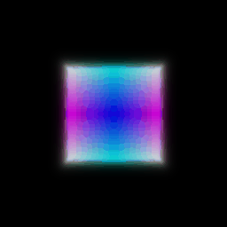
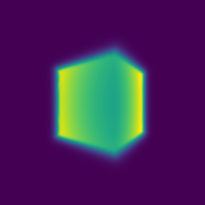
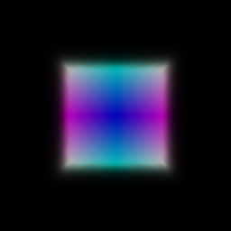
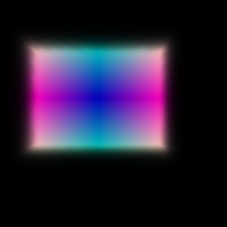
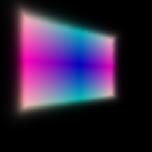
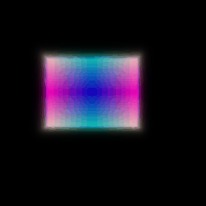
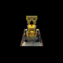

*CMSC848F - Assignment 3*
*Submitted By: Akashkumar Parmar*
*UID: 118737430*
Differentiable Volume Rendering
===============================================================================
Ray Sampling
--------------------------------------------------------------------------------

Grid Visualization

Grid Visualization
Point Sampling
--------------------------------------------------------------------------------

Volume Rendering
--------------------------------------------------------------------------------


Optimizing a basic implicit Volume
===============================================================================
Random ray sampling
--------------------------------------------------------------------------------
Visualization before training

Loss and training
--------------------------------------------------------------------------------
Visualization after training



Visualization
--------------------------------------------------------------------------------

Optimizing a Neural Radiance Field (NeRF)
===============================================================================
